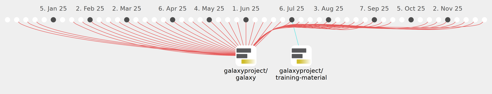

davelopez

Commits all-time: 3734
Commits last year: 684

(679)
- 7426b2f
- ec4b396
- 8db122f
- a6b5889
- d3cd25d
- fbfae2c
- 7f35639
- 0ec2358
- e017a72
- 77fd604
- 1c6bece
- e3ac780
- 631da64
- f07d673
- a2e684c
- 85d3631
- 9220710
- f069881
- 151612c
- 3fec678
- 3cd1d91
- 49bd076
- c4a6b30
- faa7904
- 50ebdcc
- c42245c
- 173f170
- 418f6da
- 1fda16f
- d476b01
- 2363580
- c2adcd0
- f761a43
- 5beb761
- 465722f
- a92d912
- 0869c0c
- d4d0439
- e6be1f4
- 9b8d343
- bc71ddd
- ba3de7e
- b738574
- bde11a1
- eef942a
- 3ef0ee3
- 378b394
- 28e5f7d
- 36d1cfd
- 4cd1363
- 577a4bf
- c7af681
- 4bf909c
- 7da5f3e
- f12b460
- e05d018
- 2eae7e4
- e0047e7
- 2e91660
- 64ed700
- 34e1dcd
- 5a016c3
- a9665dc
- bb8ecc9
- e6a42f5
- 9cfba9d
- 01ba595
- b9a9288
- e473d98
- 2b4772d
- d34ae92
- 3e63396
- 97b7476
- 58d64fa
- 995dff9
- cc26ff9
- f77d4c6
- 7278a5e
- ff166eb
- 8f1519e
- f99e01a
- f5c53a1
- 3e4a378
- ddfb0ef
- cdcd66f
- cd58476
- eef002f
- 51b343c
- 5f231a8
- d9e73d8
- 288ff47
- 2dee7e1
- 260b55e
- 8341328
- f414aa8
- ec4aa2b
- c7cce09
- a870f1b
- 801e2bb
- 37e33ce
- 0e6af2d
- 9309d29
- 3720654
- 4f18a1a
- ecaa747
- c2ed250
- adef4f8
- 578f439
- 64d385f
- 937645c
- c719f5a
- e64f570
- 9d13756
- 27cc758
- 61f9ebf
- 7034673
- c896a28
- 4d10328
- 841bbfe
- b865299
- a13d5ea
- dc346fd
- bcb2c34
- 2e0c45e
- 87d5773
- 0f31e43
- be45d63
- a9b9d6e
- c3f89c7
- 0607168
- 5587428
- 065a045
- 67da023
- 194c820
- 5682b6a
- ccd99ef
- 5329a26
- 8aec918
- 36a068b
- 0a0e3f4
- 0414a93
- 252ef8b
- f73b941
- 5be3ace
- 36fd3b9
- 0937f33
- 2a00f0e
- db89eb3
- 61c6e4e
- 9e96b12
- d2c7bda
- 367f2fe
- c87171e
- 726b1de
- 61d4960
- baf70fd
- 1611462
- 7f30aff
- 28feab5
- 0443382
- 7719a5e
- f7acf17
- d8aae06
- 34fe89e
- c0358a7
- be9b55d
- f080d5d
- 66393eb
- 436b0b9
- 9d0939c
- f7bc30b
- 946b19c
- c0162ba
- 68e7517
- 65edb03
- fdee4c6
- 9819254
- be8028c
- d668dc2
- 42ed910
- b27a865
- e9566a6
- 0c32a2a
- 3c2cb03
- 63aeaf1
- c211e37
- 8134035
- a08a18e
- 044ac24
- e7ec610
- 041fa02
- cc2ee18
- 19c448a
- e8dd628
- 6749ab5
- 4476ba5
- 989a615
- d36e867
- d4a889b
- 4f6c4a0
- 462dc83
- 13c66f3
- d5de58e
- c2e3995
- 5a83a3f
- 0aad1fa
- 9dfffa1
- 0c13d2d
- d44bac9
- 9b2573d
- 3e503d8
- 1c719b5
- fbc3ba1
- 211ec63
- e06f8c7
- eb7df35
- bf664af
- 3aae201
- e080c7a
- e17d421
- 3347623
- f151996
- 61db052
- ee0326e
- 85d04c4
- 5acf44c
- 5bfde83
- 3b91662
- bcfc23e
- c60ef22
- e18ba3c
- b9d9eb4
- 93377cf
- afeb8d5
- 91dedf5
- b10cce2
- 0ea4725
- c50bfb5
- 0aa0b94
- da27b97
- 92b2dd9
- 12c8e27
- 63553de
- e1f3b7d
- 52763a6
- 2940f25
- 1b778da
- e2a2d2f
- de08376
- 3270278
- c26641f
- 97fdc84
- 0b4a7a1
- 267342b
- 08d1372
- 30157eb
- b06e035
- eded01d
- 29d9cbf
- 8b4c490
- a2bf8d3
- 7d1ccef
- 7349e3d
- e73723b
- 9fc887d
- 13da5ed
- 44b2451
- 1fcee08
- de2fb69
- 2e2adf1
- 3a162a1
- 99c08d7
- 1337593
- 1fb05c3
- b829750
- eaee531
- fc0920e
- a15bc3c
- 8536286
- e699452
- 8c4fa1c
- 5347684
- bbeb196
- 2f83bd7
- d853e46
- 56970e3
- 833bde1
- 8ff1624
- 1d495a5
- 0becc4a
- 1908fbf
- f5b309d
- 305f6b8
- 2bf1b96
- e3e767d
- 47bc0f0
- 59fef1f
- c2fb254
- 4964660
- 46168bf
- f7f643c
- a779519
- 9821f60
- 81ee4ad
- f7bd189
- e93e13a
- 6d339f4
- 7a1ae50
- a9122b5
- a18a423
- f13a648
- a391d9c
- d4253dc
- 04f2549
- 224a25c
- ad6f2de
- 5a08bab
- 76191f3
- 725a908
- 5558f98
- ef8f94b
- 1b5673b
- f6bf604
- 7551e87
- cad00b6
- a7091a3
- c3bb781
- 6b697cb
- 03845df
- bd0bfcc
- ddb32b0
- 9f229b4
- 5d123ef
- 5abc644
- 29c2c11
- fdac882
- 58a7a9a
- 3d678b7
- 22b7f14
- a74b71b
- 9ad8c00
- 53ace94
- 9ea62b1
- 74a4f30
- f3ae4b2
- a86d7ba
- 693a11b
- 5e59f37
- cd40df3
- a3e8ea7
- fbb9290
- 849e12d
- 7aa3632
- 40feb6c
- 0daa17b
- 7c659ad
- 0bc6a67
- 383e5c6
- 512b4e2
- f35ddae
- 344aa2a
- cdcfb2d
- 7916c9f
- 5b6c478
- 8ca6756
- 7318b85
- a773285
- bf39fe2
- 1708721
- e914708
- 7c6dfe6
- 8b2e703
- 3ff2486
- db943e0
- b76dd32
- a08f1da
- fb336c2
- aad39e1
- 67f1838
- 0f52d7a
- fcad5a1
- cf4fe3b
- ae0b4a1
- f2ee289
- 18f94c8
- 44a6ecb
- 65da752
- cf5ee02
- ece92ba
- acd6798
- bad87c1
- 6cae979
- a312104
- 446cf17
- 106a31e
- 1d2d1f5
- ba1ead7
- e99bae2
- 19f2a14
- 7b26bb7
- 89b1ec2
- 10a46c1
- 6eb7f54
- 0338af2
- 86df274
- a1e0453
- c2524b3
- 6940d45
- c6b0634
- 8596c76
- ce66704
- 648b036
- 918dd7a
- f45eb4c
- 7beb3b7
- a9a3b63
- 983267d
- 87ce3cd
- 6eac857
- cd7f6b7
- b4cfcf4
- 87f958e
- a8b4263
- ec80e99
- f079ee1
- 8f7736c
- 3a78b62
- 9ad099a
- c66c0ed
- bd6b7e5
- ada7781
- 017da86
- 7ccac30
- c840701
- d687a31
- 813d2d8
- 91cfe40
- 1301d6d
- fe90f12
- c296fb9
- e40a137
- bcdf445
- 7e00b7a
- a7ea58c
- 4b9d59a
- ee6a052
- 5c4ae8f
- 1a96e63
- 65abba2
- a21b63c
- 17f99d1
- 46b4149
- 0db8a13
- 8038e22
- a945411
- 21ad9c8
- 7b5241b
- d161e47
- 168b8c6
- 90e28e5
- 679918a
- 0124f11
- 737d1c6
- 1a61f26
- 177b9c9
- 3a63834
- 36789c3
- 5b3194f
- f1b24c1
- a3b27e1
- ce7fa92
- 7647b8f
- e61d0e4
- f1e8f01
- 000c2da
- aee81e2
- cbe039d
- e5df203
- 7af411a
- e14c129
- 9ba75f1
- 19d01d3
- c444630
- 24eb764
- 9f13c06
- ba49fc0
- 30b58af
- bd86967
- be8189a
- e5147bc
- 1a6e9e6
- a558d41
- 37b0879
- 9c0ab5c
- d9d8bbe
- 58a4864
- 6a7bf24
- 74d2172
- 54980ef
- c870523
- 6f4839c
- 47e5d22
- e0270af
- 1d32e99
- 7ba0f8e
- 1c7e049
- 601099e
- 938666a
- 8b94611
- cc12cf5
- f129f01
- ab6e8c1
- a8dd6b4
- 6f0a88b
- 631da2b
- 05d5500
- 175d806
- 71103b5
- 5cd8c2a
- ac0d310
- 1e3299f
- 663cfe2
- 4ce6f56
- efe60e2
- fcc87f1
- 8628fed
- c6e6b5b
- 51730d2
- db39aad
- 8fa412b
- 9d58f6a
- 4826d63
- 060e473
- 552396c
- b18f733
- 8779e9e
- 9c1a9f6
- a38591d
- 7e4879e
- 92dfd18
- 9fdf747
- 3f50c8a
- 5f75f8f
- fd1caa8
- bcab312
- 7956bf0
- 612f57a
- 8899a12
- f37b087
- 77c4bba
- 0087d57
- 8bda593
- 916f2b2
- 29a030f
- baae1aa
- a8c7df7
- 55bc866
- 1161280
- 5117812
- 359c595
- 4a6e8da
- 531c3bb
- 553f7d0
- 7de3825
- f1872eb
- ef93b67
- 6c8e23b
- 83566e2
- 7aa0a5d
- feb9b35
- 9c11d58
- e1a1b2a
- 2519efa
- f599b68
- 96a8e11
- 43a557b
- 723af6f
- b976271
- 332e61f
- 3b65a05
- 871463c
- f532cb3
- 05ea925
- 331c450
- 55ed2c5
- 049e343
- 3878fac
- 75e1ea3
- 576304e
- 26add39
- c5f77e5
- bfcc46a
- 78f47c5
- 0c1a91d
- 8d6082f
- d11392b
- e63775b
- fefba99
- bf9ea7d
- 9fbe539
- 83ba193
- bf37ec1
- f3d6b0a
- f0bfa5f
- d814c30
- 06b98fa
- 41da6b9
- 9fa3973
- e44d3f0
- 856e0ef
- 1b4c1ec
- 237c512
- ce14fe5
- c166087
- 468fb7c
- c83808a
- e42f3c4
- 11ad656
- 26a0b00
- 6af187b
- fa51eab
- b7e7dfa
- 991011c
- d944155
- 4b891d1
- 06b6655
- bc330b7
- df4a734
- 66b14f4
- 315dc0f
- a9ce2ae
- feebdfc
- 5eb0aa5
- 45d5bc3
- edd75b0
- 73b4184
- b9dd63f
- 8ccaeab
- a8d5aa2
- f974fc8
- b86c2c0
- d131121
- 6952061
- fcc90c7
- 5f92026
- 6aa9bfe
- 349d9a0
- 50c7c8b
- 7b269cb
- 0f8aa5f
- 0151506
- a78e697
- d837f6c
- 92bafaf
- 3dc3b43
- 513d4ea
- 950e97b
- 2b4f8e0
- bff6a04
- c9dd0cb
- 8cde0c9
- bf2797a
- db6137f
- daf5bd3
- d6dc273
- eb8ca24
- c63cf4e
- 2955997
- 076cff0
- eb2da2a
- a24e8f1
- 21545f7
- c2af590
- 6a80fcf
- 989872d
- e01379d
- 5b843e1
- ee48dc3
- 4c65e72
(5)